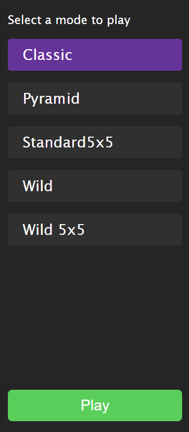
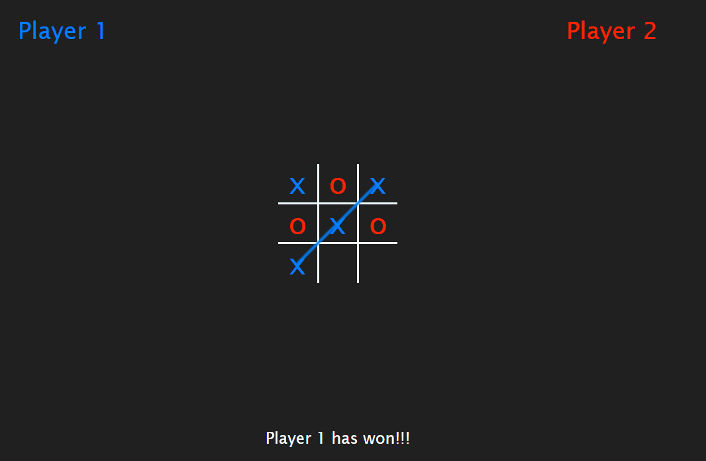
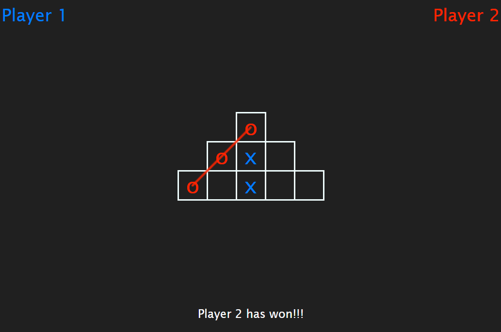
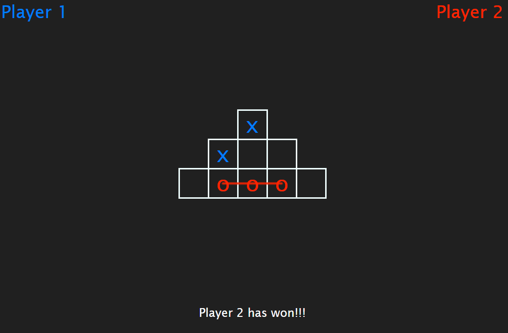
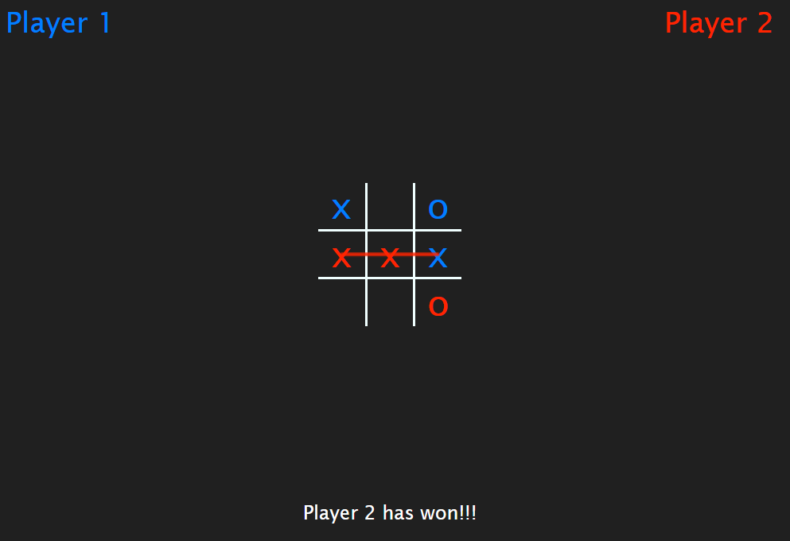
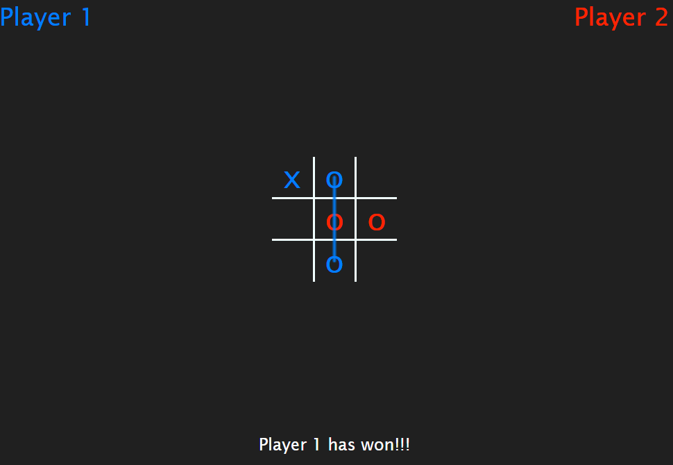
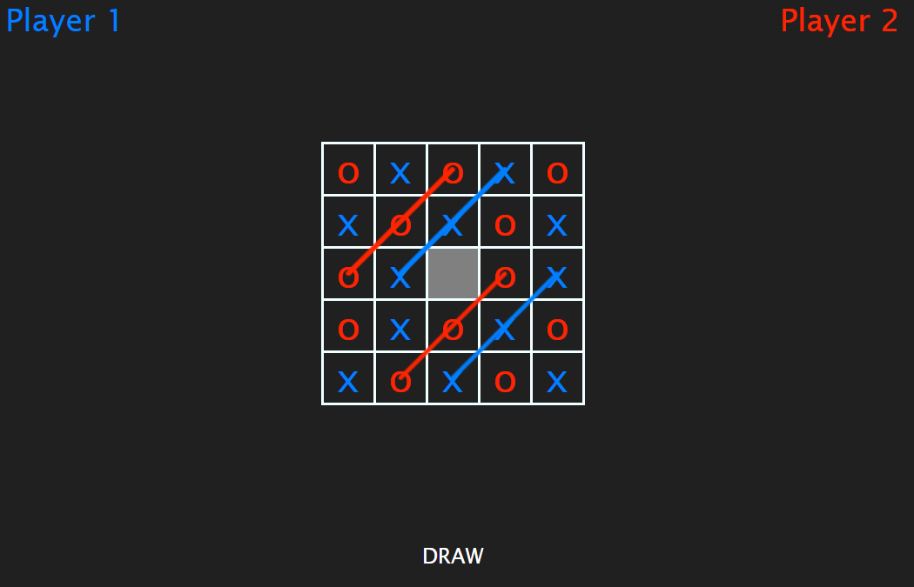
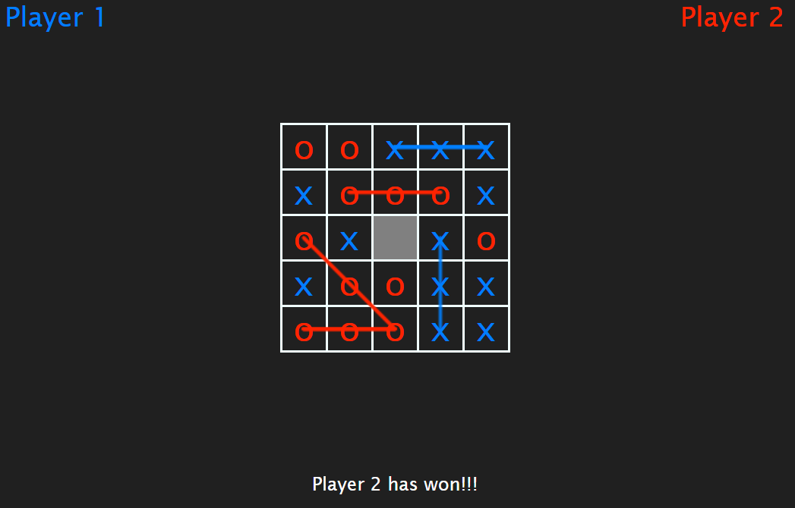
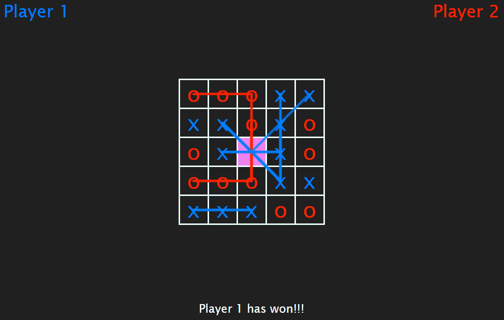
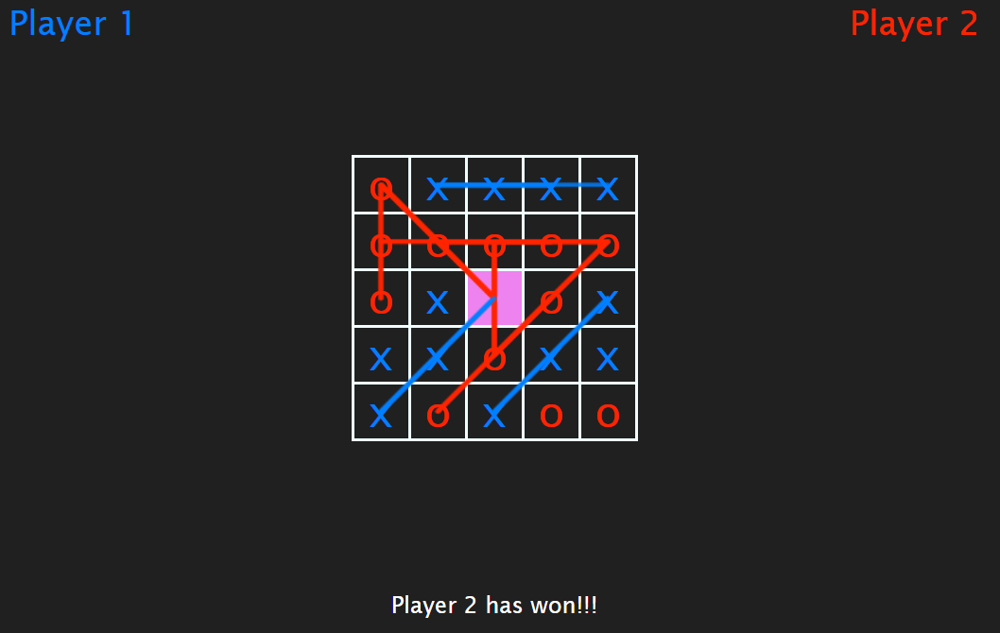

How To Play

If you are on a PC or table there should be a menu on the right side of
the screen. If you are on a mobile device you have to open the menu with
the 3 dot button. Select a mode to play. The currently selected mode is
highlighted in purple (Classic is selected by default). Once you have
selected a mode click Play button to start the game.
Game Modes
Classic Tic Tac Toe
In Tic Tac Toe, two players alternately place their symbols (X or O) on
a 3x3 grid. The first player to align three of their symbols
horizontally, vertically, or diagonally wins. If all nine squares are
filled without a winner, the game ends in a draw.


Pyramid Tic Tac Toe
Rules: The game board is shaped like–you guessed it–a pyramid.
Five squares make the base, then three, then one. Players take turns
marking Xs and Os as in traditional tic-tac-toe.
Winning: The first player to get three-in-a-row vertically,
horizontally, or diagonally wins. See two examples of winning positions,
below.


Wild Tic Tac Toe
Rules:
Two players alternately take turns. On any turn the player can choose to
either place a X Left-Click or a 0
Ctrl + Left-Click
Winning: The first player to align three of the same symbol
horizontally, vertically, or diagonally wins. If all nine squares are
filled without a winner, the game ends in a draw.


5x5 Tic Tac Toe
Rules: The game is played on a 5x5 board. Players alternately
place their symbols (X or 0). For every 3 in a row,column or diagonal
that a player gets, their score increases by 1. The game ends after both
players have played for 12 turns each. The centre square (grayed out) is
disabled and cannot be used
Winning: After both players have played for 12 the player with
higher score wins. If both players have the same score, then the game
ends in a draw.


Wildcard 5x5 Tic Tac Toe
Rules: The game is played on a 5x5 board. Players alternately
place their symbols (X or 0). For every 3 in a row,column or diagonal
that a player gets, their score increases by 1. The game ends after both
players have played for 12 turns each. The centre square is the wildcard
square and can be used to complete any sequence of 3 in a row,column or
diagonal.
Winning: After both players have played for 12 the player with
higher score wins. If both players have the same score, then the game
ends in a draw.

